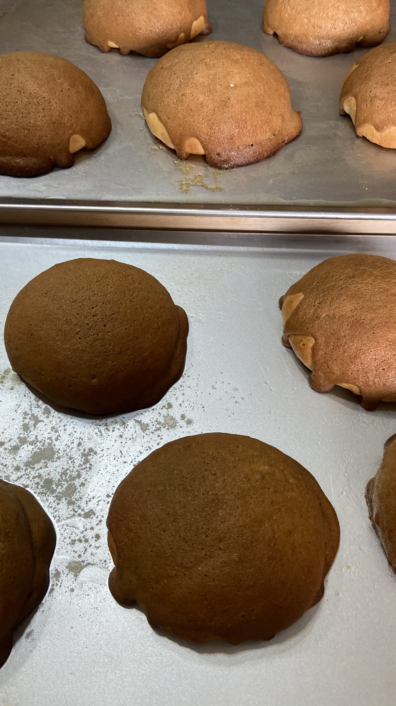

Coffee Bun

Description
These coffee buns are heavenly. I first tried the coffee buns at Kopi Roti.
Although they were delicious, I though they were too expensive. So, I decided to make them
at home. It's not that tough!
Ingredients
Dough
Topping
- cake flour
- egg
- instant coffee powder
Filling
Procedure
Water Roux
- In a small pot, cook the bread flour with water until it is thicken.
- Cover and set aside.
Bread Dough
- Mix all dry ingredients for the bread in the Kitchen Aid mixing bowl.
- In a small bowl, whisk egg together with water.
Coffee Topping
- Dissolve the coffee powder in hot water and then add vanilla essence.
- Mix all dry ingredients for the bread in the Kitchen Aid mixing bowl.
- In a small bowl, whisk egg together with water.
Filling
- Stir all ingredients for the fillng.